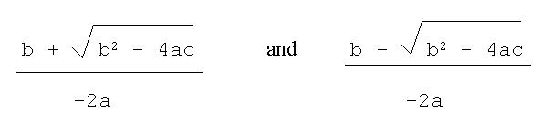

Purpose: To review carefully old ground, and then pursue a little further some of the concepts which will allow you to write more interesting functions
3.1 Review - statement of lisp evaluation rules
By evaluate we mean different things for different lisp forms...
(hideous-disaster) "success") |
3.2 Review - anatomy of a function call
Please do not hold your breath for the entire duration of this section...
We are going to revise the story so far by looking at the simple lisp session below and examining each step in minute detail.
CL-USER 1 > (defun rev-list-of-2 (my-list)We start by recalling the top-level read-eval-print loop, in which lisp repeatedly performs the following tasks:
(list (second my-list)
(first my-list)))
REV-LIST-OF-2CL-USER 2 > (rev-list-of-2 '(foo bar))
(BAR FOO)CL-USER 3 >
We recklessly decide to call our function with some test data. Looking at the function definition, we can see that it takes precisely one argument, named here my-list, and (given that we are handing that value on to functions like first) this argument has to be a list. The list we want to use for test data has two members: foo and bar. How do we construct this list? Several suggestions come to mind, but not all of them work:
The body of the function is the form (list (second my-list) (first
my-list)). We evaluate this by appealing yet again to the evaluation
rules above. list is a function, so we start by evaluating its
arguments. The first argument is the form (second my-list) - i.e.
a call to the function second. This call to second has
to (guess what!) evaluate its argument; the argument is the variable my-list
whose value is (foo bar) and so second is called with
argument (foo bar) and it duly returns the value bar.
Therefore the first of the two values which we are going to pass to the
function list is the symbol bar. Similarly the second
value passed to list is the symbol foo, and the call
to list returns the list
(bar foo)
which is finally printed out to the sound of massive celebrations by
all concerned.
(Did you remember to keep breathing?)
3.3 defun reconsidered
We recall that the syntax of defun is
(defun name (arg-1 arg-2
...) form-1 form-2 ... form-n)
where name is the name of the function, arg-1 etc.
are the names corresponding to the arguments to that function, and form-1
etc. are the lisp forms to evaluate in order to process a call to that
function. The value returned by the final form form-n is the value
to be returned by the call to the function itself.
Within the body of the function (i.e. during the evaluation of the forms form-1 form-2 etc) the names arg-1 arg-2 etc. are available to you as program variables. Their initial values are the results of evaluating the arguments to the function; in lisp parlance we say that these variables are bound to those values.
So if we have
(defun square (x)then during a call (square (+ 1 1)), the variable x is bound to the result of evaluating (+ 1 1).
(* x x))
The binding lasts only while the function is active. It ceases to exist on exit from the function and is not visible in calls to subfunctions (shallow binding); the following won't work...
(defun foo (wombat)(Question to check you're still awake: how would you get the variable wombat into the function bar?)
(bar))(defun bar ()
wombat)
3.4 More variables still
OK, so we know how to create variables on entry to functions and how to assign them values. Suppose we want to create further variables within the body of a function? We can do this by means of the special operator let*. For example, instead of
(defun add-one-and-square-it (x)we could write
(* (+ x 1) (+ x 1)))
(defun add-one-and-square-it (x)The syntax of let* is
(let* ((x-plus-one (+ x 1)))
(* x-plus-one x-plus-one)))
(let* ((var-1 value-1)
(var-2
value-2)
...)
form-1
form-2
...
form-n)
Each of the pairs (var-i value-i) represents a variable binding - the expression value-i is evaluated and the variable var-i is bound to that value. The bindings are done in order:
3.5 Example - reading, writing and arithmetic
Let's trot out the example of converting temperatures from Fahrenheit to Celsius. Rather than writing a function which takes one value and returns another, i.e.
CL-USER 18 > (defun simple-fahrenheit-to-celsius (fahrenheit)suppose that we have been asked to write a function which prompts the user for a value, reads it in and prints the result.
(float (* (- fahrenheit 32) 5/9)))
SIMPLE-FAHRENHEIT-TO-CELSIUSCL-USER 19 > (simple-fahrenheit-to-celsius 212)
100.0CL-USER 20 > (simple-fahrenheit-to-celsius 32)
0.0CL-USER 21 > ; very happy
CL-USER 31 > (fahrenheit-to-celsius)We need the following functions to handle reading and printing of lisp values:
Please give a value in degrees F: 32
32 degrees F is 0.0 degrees C.
NILCL-USER 32 > ; etc
| read | reads a lisp form and returns it. At its simplest, a function of no arguments which reads from the listener. If no form has been typed yet, read will sit and wait until a complete form is available to it. |
| format | function for generating formatted output. First
argument is a destination. Specify
=> "Hello, Nick." |
And the function definition looks like this:
(defun fahrenheit-to-celsius ()
(format t "~&Please give a value in degrees F: ")
(let* ((fahrenheit (read))
(celsius (float (* (- fahrenheit 32) 5/9))))
(format t "~&~a degrees F is ~a degrees C.~&" fahrenheit celsius)))
3.6 Further example - quadratic equations
If a quadratic equation is something you "know from nothing", don't panic. All we want to do is define a function of three numerical arguments a, b and c which returns a list of the following two values:

(assuming the square-root is possible - if it isn't we'll generate an error instead).Don't ask why, just assume your lecturer has acquired a passion for daft formulae and let him get on with it.
Anyway, this example introduces three new functions:
| < | predicate which takes any number of (numerical)
arguments and returns t if they are all in strictly ascending
order. Otherwise it returns nil. So
(< 499 499.8 500 1000) => t (< 1 2 3 4 6 5 7 8 9) => nil (< 0 0) => nil While we're here, > tests for descending order, and <= and >= are variants of < and > which allow arguments which are = (>= 2 1 1 1 0 0) => t |
| sqrt | function of one number which returns its square root. |
| error | function for flagging (signalling) errors. At its simplest, it is happy with a single argument (a string) which will be printed out as an error message. |
So here we go:
(defun quadratic-solve (a b c)or (imo better - why?)
(let* ((discriminant (- (* b b) (* 4 a c))))
(if (< discriminant 0)
(error "Discriminant was negative.")
(list (/ (+ b (sqrt discriminant))
(* -2 a))
(/ (- b (sqrt discriminant))
(* -2 a))))))
(defun quadratic-solve (a b c)
(let* ((discriminant (- (* b b) (* 4 a c))))
(if (< discriminant 0)
(error "Discriminant was negative.")
(let* ((square-root (sqrt discriminant))
(denominator (* -2 a)))
(list (/ (+ b square-root) denominator)
(/ (- b square-root) denominator))))))
3.7 Further Logic
Some of the examples below will need the following pair of macros.
| and | Takes any number of arguments. Evaluates them
in order until one returns nil, at which point and stops
evaluating things and returns
nil. If the last argument returns
non-nil, then and returns that value. Examples:
|
| or | Takes any number of arguments. Evaluates them
in order until one returns a non-nil value, at which point or
stops evaluating things and returns that value. If the last argument returns
nil,
then or returns nil. Examples:
|
3.8 Practical Session
3.9 Suggested activity / exercises etc
Coming next: more about lists....